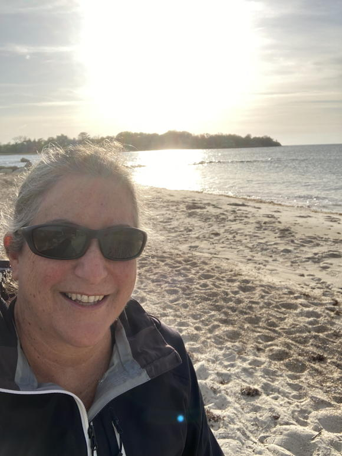
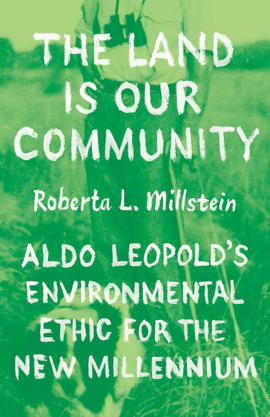

 I am an Emerit Professor in the Department of Philosophy at UC Davis, retired from teaching but still researching. I am a AAAS Fellow (since election in 2022). I am also affiliated with UCD's Science and Technology Studies (STS) Program and I co-run UCD's PhilBio Lab with Jim Griesemer.
I am a Co-Editor of the peer-reviewed open-access online journal Philosophy, Theory, and Practice in Biology. I am on the editorial boards for the Stanford Encyclopedia of Philosophy and the journal Philosophy of Science.
For several years, I have worked with the students, staff, and faculty of Fossil Free UCD, which successfully initiated a campus-wide Fossil Fuel-Free Pathway Plan and whose efforts are ongoing. Since May 2023, I have been a member of the Yolano Group Sierra Club Management Committee.
 I have written a new analysis and defense of Aldo Leopold's land ethic, The Land Is Our Community: Aldo Leopold's Environmental Ethic for the New Millennium. It is published by the University of Chicago Press, from whom you can order a physical copy or read the online open access version (downloadable for free, here).
Reviews:
"Millstein presents lucid explanations and defenses of the concepts central to Aldo Leopold's land ethic with the aim of demonstrating their value for meeting today's environmental challenges. . . . Replete with examples of healthy and sick communities and successful policy measures, Millstein's book is a timely and informative study." — Choice
My research is in the philosophy of science, the history & philosophy of biology, and environmental ethics. I am particularly interested in evolutionary biology, ecology, and environmental issues, and the intersections between them.
With respect to ecology, I have examined the historical and contemporary connections between ecology and population genetics. As part of a more extensive research project, I have re-interpreted and defended the work of 20th century ecologist (forester, wildlife manager, conservationist) Aldo Leopold, analyzing land communities (roughly similar to biotic communities/ecosystems), interdependence, functions/functioning, and land health. Inasmuch as these ideas arise in the context of Leopold's land ethic, this ongoing project is also a project in environmental ethics. Other work in environmental ethics examines the implications of the environmental impacts of GMOs and argues for how we ought to think of the field of environmental ethics.
With respect to evolutionary biology, I have particularly focused on central processes in evolution such as natural selection, random drift, sexual selection, and social selection, as well as central concepts in evolution such as fitness, population, metapopulation, race, and environment. This has included analysis of the general philosophy of science concepts of chance, probability, causation, causal processes, and determinism/indeterminism, and the ways in which they manifest (or fail to manifest) within evolutionary processes. My conceptual work has been informed by my historical work, which includes analysis of some central 20th century debates in evolutionary biology, such as the neutral and “nearly neutral” theories of evolution and the empirical study of the land snail Cepaea nemoralis in the wild.
I am a co-editor of Mechanism and Causality in Biology and Economics with Hsiang-Ke Chao and Szu-Ting Chen (see book review by Anya Plutynski) and co-editor of Genomics and Philosophy of Race with Rasmus Grønfeldt Winther and Rasmus Nielsen. I have published in journals such as Philosophy of Science, Biology and Philosophy, The British Journal for the Philosophy of Science, Studies in History and Philosophy of Biological and Biomedical Sciences, Journal of the History of Biology, Ethics, Policy & Environment, Biological Conservation, and Biological Theory.
Papers online: See my curriculum vitae for links to my papers and other information about my academic career.
Interviews:
Other pages about me or my work: Wikipedia, Google Scholar, PhilPapers
Recorded presentations:Although I am not teaching anymore, for history's sake, here are the syllabi for courses that I taught at UC Davis in the last incarnation in which I taught them. At some point I will take these down...
By snail mail:
Professor Emerit Roberta L. Millstein
Department of Philosophy
University of California, Davis
One Shields Avenue
Davis, CA 95616-8673
By email: RLMillstein@ucdavis.edu
By phone: 530-754-0715 (not a good way to reach me - please email)
On Bluesky: @cepaea.bsky.social
On Mastodon: @cepaea@mstdn.social